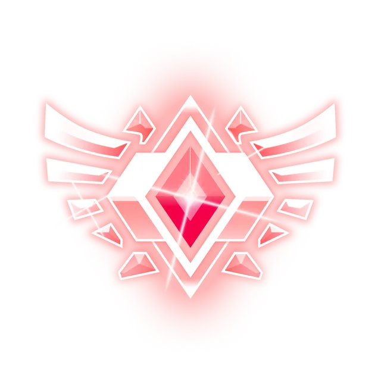

Landing page Furia: Rocket League
Como um grande fã do time Furia e um esforçado jogador de Rocket League, gostaria de ter a experiencia de acompanhar o dia a dia dos pro-players e os bastidores da equipe, além de entender como a parte técnica relacionada com a tecnologia interfere na rotina e no desempenho da equipe.
Espero poder fazer parte dessa equipe e desempenhar todo meu esforço em prol da Furia. Caso ocorra, esse tempo que passarei estagiando possa servir de aprendizado e experiência para minha carreira profissional, que está começando agora. Será um grande prazer integrar ao time, aguardo o retorno!